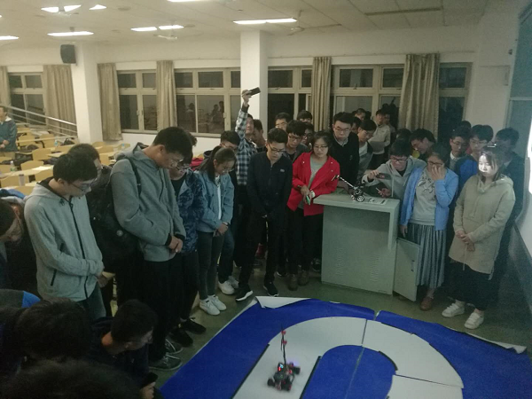
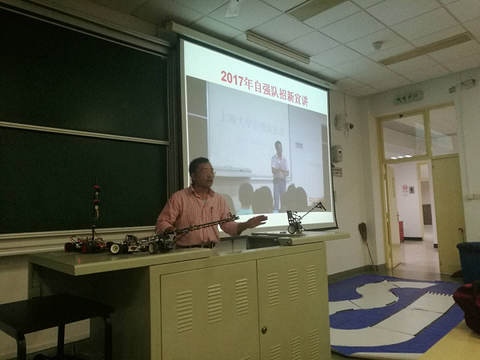
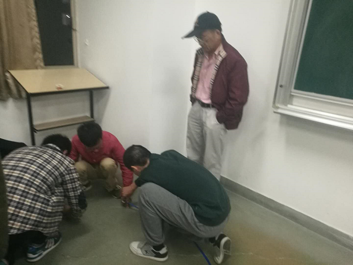
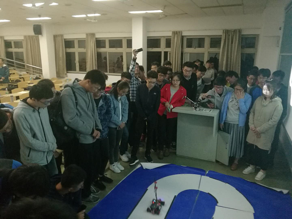
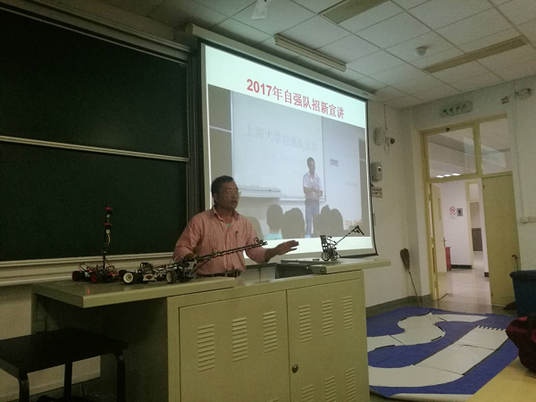
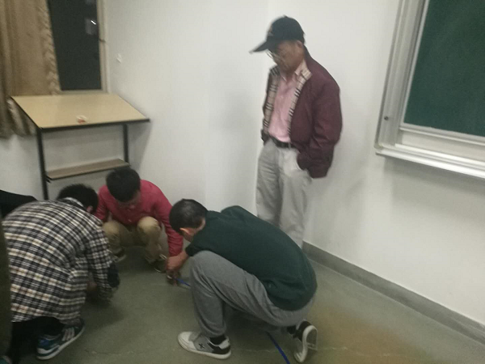

自强队智能模型车与家庭服务机器人招新宣讲
10月23日晚上7时，上海大学自强队在陈万米老师和黄慎之老师的指导下，在宝山校区AJ203室对智能模型车和家庭服务机器人仿真进行了招新宣讲，本次宣讲由自强队只智能 车组领队叶立俊和家庭服务机器人仿真组领队毛登辉同学负责完成。此次招新面向全校同学举行，不分年级，吸引了来自多个学院各个年级的同学来到现场。并且，本次招新宣讲会受到了同学的广泛关注和积极响应，同学们热情高涨，取得了良好的效果。
本次宣讲，毛登辉同学先给大家详细地介绍了自强队仿真组的情况。两年以来，经过3代自强队员的努力，家庭仿真项目不断进步，并取得了良好的成绩。
经过宣讲，同学们对家庭仿真组有了进一步的认识。之后，智能车小组同学文卓同学介绍智能小车的发展状况和现状。他向同学们介绍了智能小车的发展历史，历年以来培养的优秀学生。并且，他代表智能车组表达了整个队伍的雄心壮志。现场的同学们也许是受到了感染，热情高涨，想要加入智能车组。最后，自强队指导老师，黄慎之老师分享了自己在自强队十年的点滴。老师慷慨激昂的演讲一段段精彩的故事与引得同学们不时传来热烈的掌声，把此次宣讲会推向高潮。临近技术，智能车组做了现场演示，引得同学们纷纷围观。
对于这次招新工作，得到了陈老师和黄老师的大力支持，老师们鼓励做好本次宣讲，并对下面要进行的作做好计划，鼓励大家扎实投入到比赛和学习中去，继承自强队的传统，践行队训“创新、主动、坚韧、团结”，提升自己实践与创新能力打下良好的基础，力争在比赛中赢得荣誉，为自己的学业生涯增添亮丽的色彩。
   
  
上海大学自强队供稿
2017年6月25日